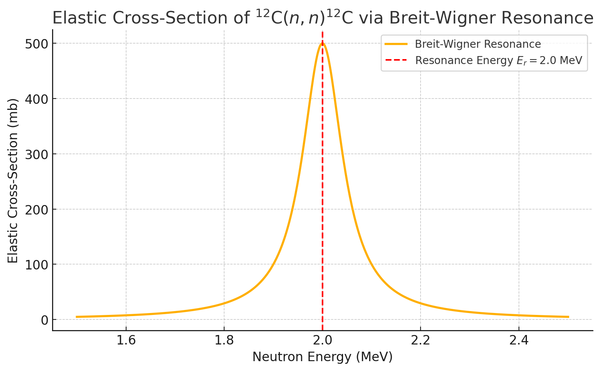

Unit 8 : Worked Problems#
Problem: Co-59 neutron cross-sections#
Co-59 is a stable nucleus. The total neutron cross-section for Co-59 is \(\textnormal{Co}_{59}\) for 14 MeV neutrons is \(2699 \, \textnormal{mb}\). The dominant branching ratios for individual reactions contributing to the total cross-section are given below.
Reaction |
Branching Ratio |
|---|---|
(n,total) |
100% |
(n,elastic) |
49.4% |
(n,inelastic) |
20.0% |
(n,2n) |
24.6% |
(n,na) |
0.1% |
(n,np) |
2.3% |
(n,p) |
1.9% |
(n,d) |
0.2% |
(n,a) |
1.2% |
Determine the cross-sections of each individual reaction.
Determine the average number of final state neutrons per event that would be observed over all reactions.
Determine the cross-section for producing a 1-proton final state.
Solution
Total Cross-sections To obtain the individual cross-sections we simply multiply the total cross-section by the branching ratio.
Reaction |
Branching Ratio |
Cross-section [mb] |
|---|---|---|
(n,total) |
100% |
2699 |
(n,elastic) |
49.4% |
1333.3 |
(n,inelastic) |
20.0% |
539.8 |
(n,2n) |
24.6% |
663.6 |
(n,na) |
0.1% |
2.7 |
(n,np) |
2.3% |
62.1 |
(n,p) |
1.9% |
51.3 |
(n,d) |
0.2% |
5.4 |
(n,a) |
1.2% |
32.4 |
Average Neutrons To estimate the average number of neutrons we need to first determine the number of neutrons in each final state.
Reaction |
Branching Ratio |
N Neutrons |
|---|---|---|
(n,elastic) |
49.4% |
1 |
(n,inelastic) |
20.0% |
1 |
(n,2n) |
24.6% |
2 |
(n,na) |
0.1% |
1 |
(n,np) |
2.3% |
1 |
(n,p) |
1.9% |
0 |
(n,d) |
0.2% |
0 |
(n,a) |
1.2% |
0 |
We then simply multiply each one by the branching ratios to estimate the average number of neutrons we would see.
This gives an average of approximately 1.21 neutrons per reaction. If we didn’t have the 2n reaction you would see this would instead be only 0.78 neutrons per reaction, but because around 25% of the time a reaction produces two neutrons, the average ends up being greater than one.
Proton Final State Cross-section
The only reactions contributing to the proton final state are (n,np) and (n,p). We therefore simply add both cross-sections together.
Problem: Branching Ratios for Compound Nucleus Reactions on \( ^{12}\textnormal{C} \)#
Consider neutron-induced reactions on carbon-12 at a neutron energy of \( E_n = 14 \, \textnormal{MeV} \), where the compound nucleus formed is \( ^{13}\textnormal{C}^* \) in an excited state.
At this energy, the dominant reactions and their measured cross-sections are approximately:
Reaction Channel |
Reaction |
Cross-section (\( \sigma \)) [mb] |
|---|---|---|
Elastic scattering |
\( ^{12}\textnormal{C}(n,n)^{12}\textnormal{C} \) |
850 |
Inelastic scattering |
\( ^{12}\textnormal{C}(n,n')^{12}\textnormal{C}^* \) |
200 |
Neutron emission |
\( ^{12}\textnormal{C}(n,2n)^{11}\textnormal{C} \) |
70 |
Proton emission |
\( ^{12}\textnormal{C}(n,np)^{11}\textnormal{B} \) |
20 |
Alpha emission |
\( ^{12}\textnormal{C}(n,n\alpha)^{8}\textnormal{Be} \) |
10 |
Calculate the total reaction cross-section \( \sigma_\textnormal{total} \) by summing all the reaction cross-sections.
Compute the branching ratio for each reaction channel, defined as:
\[ B_i = \frac{\sigma_i}{\sigma_\textnormal{total}} \]Express your answer in percentages.
Which decay channel is dominant, and what is the probability (%) that the compound nucleus will de-excite via proton emission?
Solution
Total cross-section:
\[ \sigma_\textnormal{total} = 850 + 200 + 70 + 20 + 10 = 1150 \, \textnormal{mb} \]Branching Ratios:
Elastic: \( B = \frac{850}{1150} \approx 73.9\% \)
Inelastic: \( B = \frac{200}{1150} \approx 17.4\% \)
\( (n,2n) \): \( B = \frac{70}{1150} \approx 6.1\% \)
\( (np) \): \( B = \frac{20}{1150} \approx 1.7\% \)
\( (n\alpha) \): \( B = \frac{10}{1150} \approx 0.9\% \)
Dominant channel: Elastic scattering dominates with ~74%.
Probability of proton emission:
\[ 1.7\% \]
Problem: Resonance Contribution via Breit-Wigner Formula#
In addition to the direct reaction channels, suppose that near \( E_n = 2.0\,\textnormal{MeV} \), the \( ^{12}\textnormal{C}(n,n) \) elastic cross-section shows a prominent isolated resonance due to a \( ^{13}\textnormal{C}^* \) compound nucleus state.

You are given:
Resonance energy: \( E_r = 2.0\,\textnormal{MeV} \)
Neutron width: \( \Gamma_n = 0.050\,\textnormal{MeV} \)
Total width: \( \Gamma = 0.10\,\textnormal{MeV} \)
Resonance peak cross-section: \( \sigma_{\textnormal{max}} = 500\,\textnormal{mb} \)
The cross-section for elastic scattering near the resonance is described by the single-level Breit-Wigner formula:
Calculate the elastic scattering cross-section at \( E = 2.1\,\textnormal{MeV} \) using the Breit-Wigner formula.
Discuss how this resonance affects the elastic scattering branching ratio if the neutron energy is close to \( 2.0\,\textnormal{MeV} \) instead of \( 14\,\textnormal{MeV} \) as in the first part.
Solution
Breit-Wigner cross-section at \( E = 2.1\,\textnormal{MeV} \):
So, at \( 2.1\,\textnormal{MeV} \) the cross-section is reduced to 100 mb due to being off-resonance.
Discussion:
When the neutron energy is near \( E_r = 2.0\,\textnormal{MeV} \), the elastic scattering cross-section is strongly enhanced due to the resonance (up to 500 mb instead of ~100 mb off-resonance).
As a result, the branching ratio for elastic scattering would increase significantly at \( E_n \approx 2\,\textnormal{MeV} \) because the resonance enhances \( \sigma_{(n,n)} \) while other channels (\( (n,n') \), \( (n,2n) \), etc.) do not exhibit such a strong resonance at this energy.